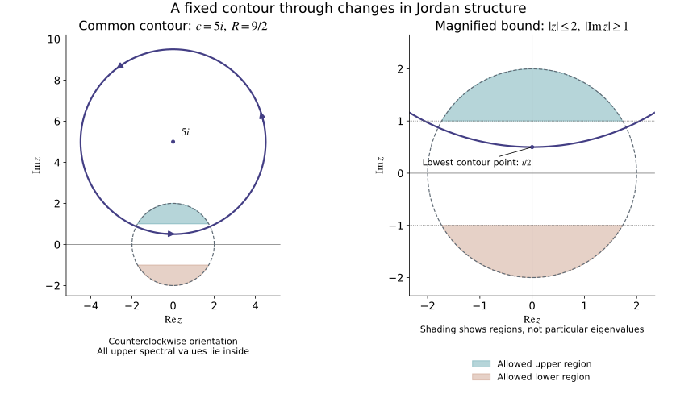

Spectral algebra and contour projections
This companion supplies the finite-dimensional complex algebra used in
Quadratic Hamilton maps and positive complex planes.
All spaces here are finite dimensional. No diagonalizability assumption is
made for a general complex matrix.
Original programme proofs and illustration: GPT-6 Astra (OpenAI), Ultra,
5 October 2026; CC0. Earlier components retain their own notices.
U001 Q5
proves real orthogonal diagonalization, including singular forms.
M0a
proves the invariance and additivity of inertia.
C0
supplies basis extension, rank and annihilator dimensions.
The U001 finite-calculus proofs
supply matrix inversion and the inverse theorem. Its
finite algebra and compactness proofs
and complex exponential and circle proofs
give determinant identities, compact extrema, convergent geometric sums,
complex arithmetic, all circle angles and differentiation of exponentials.
Exact entries are recorded in the proof map.
Gaussian elimination works over the complex field just as over the real
field: choose a nonzero pivot, divide its row by that pivot and subtract
multiples from the other rows. The remaining rectangle has one fewer row
and column. Induction constructs a basis of the kernel by assigning its
free coordinates, and pivot columns give a basis of the image. In
particular a square matrix has nonzero determinant exactly when it is
invertible, by the determinant row operations and the cofactor inverse.
The complex versions of rank-nullity and basis extension used below follow
from these constructions.
A1. Complex polynomial roots and factorization
Every nonconstant complex polynomial has a root and factors completely
into linear factors with their multiplicities.
Proof. If its degree is d, its leading term and the triangle
inequality give ∣p(z)∣→∞ as ∣z∣→∞: for ∣z∣≥1,
the sum of all lower terms is at most C∣z∣d−1, whereas the leading
term has size ∣ad∣∣z∣d. Thus ∣p∣ attains a global minimum at
some z0, by compactness of a sufficiently large closed disk.
Suppose p(z0)=0. Expand the finite polynomial at that point:
p(z0)p(z0+w)=1+awk+j=k+1∑dbjwj,a=0,k≥1.(A1)
Such a first nonzero coefficient exists, since translation and division by
a nonzero constant do not make a nonconstant polynomial constant.
The circle-angle theorem P16.3 supplies a real θ for which
aeikθ=−∣a∣. Explicitly, write a/∣a∣=eiϕ and
take θ=(π−ϕ)/k. For w=reiθ, 0<r≤1, the
tail has size at most Crk+1, with C=∑j>k∣bj∣.
Choose r so small that ∣a∣rk<1 and Cr<∣a∣. Then
p(z0)p(z0+w)≤1−∣a∣rk+Crk+1<1,(A2)
contradicting the minimum. Hence p(z0)=0.
Polynomial division by z−z0 gives a polynomial of degree d−1
and a constant remainder equal to p(z0). This division is obtained
by subtracting the leading multiple repeatedly, so each step reduces
the degree. The remainder is zero. Induction proves complete
factorization. The same division proves that a nonzero degree-d
polynomial has at most d distinct roots. □
A2. The characteristic identity
For a complex d-by-d matrix T, its characteristic polynomial
p(z)=det(zI−T) satisfies p(T)=0.
Proof. The dimension-zero case is immediate. For d≥1, cofactor
expansion gives the polynomial matrix identity
(zI−T)adj(zI−T)=p(z)I.(A3)
Write the adjugate as ∑j=0d−1Ajzj and
p(z)=zd+∑j=0d−1cjzj. Comparing coefficients gives
Ad−1=I,Aj−1−TAj=cjI (1≤j≤d−1),−TA0=c0I.(A4)
Successive substitution expresses A0 as
Td−1+cd−1Td−2+⋯+c1I. The last equation is p(T)=0.
This coefficient argument avoids substituting a matrix into a polynomial
identity whose other coefficients might not commute with it. □
A3. The full generalized spectral splitting
Let the distinct roots of p be λ1,…,λs, with
multiplicities mi. Then
E=i=1⨁sVi,Vi=ker(T−λiI)mi=ker(T−λiI)d.(A5)
Each summand is T-invariant, and T=λiI+Ni on it,
with Nimi=0.
Proof. Put fi(z)=(z−λi)mi and qi=p/fi.
There are polynomials ui,vi with uiqi+vifi=1.
Indeed polynomial long division gives the Euclidean algorithm;
successive nonzero remainders have decreasing degree. Its last
nonzero remainder divides both polynomials. By A1, a nonconstant
common divisor would have a common root, which these two factors do
not have. The remainder is a nonzero constant; reverse the divisions
and divide by that constant to obtain the asserted identity.
Set Pi=ui(T)qi(T). A2 gives fi(T)Pi=0, so its image
lies in Vi. On Vi, the polynomial identity gives Pi=I;
on Vj, j=i, it gives Pi=0 because qi contains
the factor fj. Also ∑iuiqi−1 is divisible by every
fi: reduce modulo fi and use the same identity.
Pairwise coprimality implies divisibility by their product. For two
factors, if a∣r, b∣r, and ua+vb=1, writing r=ak
gives k=uak+vbk, whose two terms are divisible by b; hence
ab∣r. Induct over the factors.
Consequently ∑iPi=I by A2. The previously checked restrictions
prove that this is a direct sum and that the Pi are its projections.
If μ=λi, then on Vi
(T−μI)−1=j=0∑mi−1(λi−μ)j+1(−Ni)j.(A6)
Multiplication telescopes, proving the formula. Thus the dth
kernel in (A5) has no component in any other summand, and it equals
Vi. Invariance follows because all the operators used are
polynomials in T. If T is real, conjugation in (A5) sends
Vλ to Vλˉ. □
A4. Nilpotent chains and their invariants
Every nilpotent endomorphism has a basis consisting of finite chains
v,Nv,…,Nm−1v. The number of chains is dimkerN;
their lengths are determined by the dimensions of the kernels of
all powers. Applying this on the summands in A3 proves the full
Jordan decomposition, over C. For a real nilpotent map,
the entire construction is real.
Proof. If the space is nonzero, let m be the smallest integer
with Nm=0, and choose v with Nm−1v=0.
Its m chain vectors are independent: in a nontrivial linear
relation choose the smallest power j with nonzero coefficient,
then apply Nm−1−j. Only that coefficient times Nm−1v
survives, a contradiction.
Extend these vectors to a basis and choose a linear functional
ℓ equal to one on Nm−1v and zero on all the earlier
chain vectors. Define
Px=j=0∑m−1ℓ(Nm−1−jx)Njv.(A7)
On Nkv the only nonzero coefficient is the one with j=k;
powers at least m vanish. Thus P is the identity on the chain
span C, has image C, and P2=P.
In PNx its j=0 coefficient vanishes because Nm=0.
For j≥1, its coefficient at Njv is
ℓ(Nm−jx), exactly as in NPx. Hence PN=NP.
It follows that E=C⊕kerP is an invariant splitting.
The latter space has smaller dimension and its restriction is
nilpotent. Induction completes the chain basis, including m=1.
A length-m chain contributes min(j,m) to dimkerNj.
Therefore
dimkerNj−dimkerNj−1=#{chains of length at least j}.(A8)
These differences determine the number of each exact length. At
j=1 they count all chains. In particular, a nonzero nilpotent
space with a one-dimensional kernel consists of one chain.
The matrix of T=λiI+Ni in its chain basis has diagonal
entries λi; hence the characteristic polynomial on that
summand is (z−λi)dimVi.
Comparison of the factors in A3 gives dimVi=mi.
Thus all multiplicities and Jordan lengths used in the lesson
are actual conjugacy invariants. □
A5. Circle moments and the exact resolvent projection
Let γ(θ)=c+Reiθ, 0≤θ≤2π,
with R>0, traversed counterclockwise. For λ off the
circle,
2πi1∮γz−λdz={1,0,∣λ−c∣<R,∣λ−c∣>R,∮γ(z−λ)j+1dz=0(j≥1).(A9)
Proof. In the inside case put a=(λ−c)/R.
Substituting dz=iReiθdθ gives
i/(1−ae−iθ). Its geometric series converges uniformly
because ∣a∣<1. The constant term integrates to 2πi;
every other term integrates to zero, by
∫02πeikθdθ=0 for a nonzero integer k,
which follows from differentiation and the period 2π.
Uniform tails justify integration term by term.
In the outside case expand
c−λ+Reiθ1=c−λ1k≥0∑(−c−λR)keikθ.(A10)
After multiplying by iReiθ, every frequency is a
positive integer, so the integral is zero. Again the series is
uniform. For j≥1, the integrand has the single-valued
primitive −(z−λ)−j/j along the circle. The real
chain rule and the fundamental theorem give zero because its
endpoint values agree. This proves (A9) without a residue theorem.
For a matrix T, restrict to a generalized summand of A3.
There the finite identity
(zI−T)−1=j=0∑mi−1(z−λi)j+1Nij(A11)
follows by multiplication, using nilpotence. Applying (A9)
shows that the integral (2πi)−1∮γ(zI−T)−1dz
is the identity on every inside summand and zero on every
outside summand. It is exactly the projection onto the full
inside generalized spectral sum and commutes with T.
In particular this is valid for nontrivial Jordan blocks.
□
A6. A common contour for a continuous matrix family
Suppose Tt is a continuous complex matrix family on
0≤t≤1, and every Tt has no real eigenvalue.
There are M>0,δ>0 for which every spectral value satisfies
∣λ∣≤M,∣Imλ∣≥δ.(A12)
One fixed upper-half-plane circle encloses all upper spectra and
no lower spectra. The associated projections are continuous,
with locally constant rank and locally continuous bases of
their ranges.
Proof. The Euclidean norm estimate
∥T∥≤dmaxjk∣Tjk∣ follows from scalar
Cauchy–Schwarz. A continuous finite collection of entries is
bounded on the parameter interval; choose M>0 bounding
these operator norms. Every eigenvalue has an eigenvector by
A0, so ∣λ∣≤∥Tt∥≤M.
If there were no positive δ, take parameters tj
and eigenvalues λj with imaginary parts tending
to zero. Compactness gives a subsequence with
(tj,λj)→(t,λ), where λ is real.
The determinant is a polynomial in its entries, so
det(λI−Tt)=limjdet(λjI−Ttj)=0.
This is a forbidden real eigenvalue. Reduce δ, if
necessary, so 0<δ≤M.
Put
L=M2/δ+δ,R=L−δ/2,γ(θ)=iL+Reiθ.(A13)
The circle and its interior lie above the line
Imz=δ/2. For an upper spectral value,
∣λ−iL∣2≤M2+L2−2Lδ<L2−Lδ+δ2/4=R2.(A14)
The strict inequality holds since Lδ=M2+δ2.
Thus all upper values are inside, while all lower values are
outside. There are no spectral values on the circle.
The cofactor formula for the inverse gives a continuous
resolvent on the compact set of t and θ; its
determinant denominator is bounded away from zero.
Uniform continuity and the finite contour length therefore
make its integral continuous in t, in matrix norm.
A5 proves each integral is the required projection.
For two projections P,Q with ∥P−Q∥<1, the restriction
of Q to ranP is injective: if Px=x
and Qx=0, then ∥x∥≤∥P−Q∥∥x∥, so x=0.
Exchanging the projections gives equal ranks. For a basis
vj of ranP, the vectors Qvj
therefore form a basis of ranQ. They vary
continuously with Q. This gives the asserted local
constant ranks and continuous bases. □

Open the full-size figure.
Figure A1. The exact illustrative constants are M=2,δ=1,
so (A13) gives center 5i and radius 9/2. The right panel
magnifies the two regions ∣z∣≤2, ∣Imz∣≥1
where (A12) allows spectral values. The solid contour encloses the
entire upper region; its lowest point has imaginary part 1/2.
The arrows give the counterclockwise orientation in (A9).
No individual eigenvalues or diagonalizability are presumed.
Equation (A14), rather than the drawing, proves the inclusion.
Use the convention that a Hermitian form h is linear in its
first argument. If h≥0, then
∣h(x,y)∣2≤h(x,x)h(y,y).(A15)
In particular a null vector pairs to zero with every vector.
Proof. If h(y,y)=c>0, set b=h(x,y) and expand
0≤h(x−(b/c)y,x−(b/c)y)=h(x,x)−∣b∣2/c.
If h(y,y)=0, nonnegativity of h(y+tx,y+tx) for all
complex t forces h(x,y)=0: otherwise choose the phase
of a sufficiently small t to make its real linear term
negative, dominating the quadratic term. This proves (A15).
A positive definite Hermitian matrix G0 has a positive
minimum a on the complex Euclidean unit sphere, regarded
as a compact real sphere. If ∥G−G0∥<a, then
vˉTGv≥(a−∥G−G0∥)∣v∣2>0 for v=0.
Thus strict positivity is open. For a continuous family of
projections of fixed rank, apply this to the Gram matrices
of the continuous bases in A6.
For later use, a nonempty subset of [0,1] that is both
relatively open and closed is the whole interval. If not,
choose one point in it and one outside. After reversing the
interval if needed, the first is left of the second. The
supremum of its points between them belongs to it by
closedness and is less than the second point. Openness then
gives a still larger point in it, a contradiction.
□
A8. Positive square roots and orthonormal bases
For a positive definite real symmetric matrix A, Q5 gives
an orthogonal U and positive aj with
A=Udiag(aj)UT. Therefore
D=Udiag(aj)UT(A16)
is real symmetric positive definite, invertible, and satisfies
D2=A. The scalar positive roots and their signs are among
the U001 inputs. This proves the square-root construction used
in the graph normalization.
It is the unique positive symmetric square root. If E is
another one, EA=EE2=E2E=AE, so E preserves each
eigenspace of A. Its symmetric restriction there has an
orthonormal eigenbasis by Q5. On the eigenspace with eigenvalue
a>0, every eigenvalue of that restriction is positive and
has square a, so it equals a. Hence E=D.
For any positive real bilinear inner product g, a real
basis v1,…,vk can be made g-orthonormal.
After e1,…,ej−1 have been chosen, set
wj=vj−l<j∑g(vj,el)el,ej=wj/g(wj,wj).(A17)
The earlier orthonormality makes every g(wj,el) zero.
Independence of the original basis implies wj=0,
so its denominator is positive. This induction proves all
claims, also on a given subspace with the restricted product.
A9. Linear matrix flows
For every finite matrix T, define
etT=j=0∑∞j!tjTj.(A18)
The inequality ∥AB∥≤∥A∥∥B∥ follows immediately
from the operator norm definition. Thus on ∣t∣≤a
the series and each derivative series are dominated by
the convergent scalar exponential series with argument
a∥T∥, multiplied by a fixed power of ∥T∥.
The uniform derivative-limit argument of U001 P15.1 gives
(etT)′=TetT and initial value I.
Multiplication of two absolutely convergent series, and the
finite binomial formula, give esTetT=e(s+t)T.
Alternatively both sides as functions of s solve the
same finite linear initial-value problem. Hence etT
is invertible, with inverse e−tT, and gives the entire
linear flow. If Tm=0, (A18) terminates at m−1.
For an oscillator T2=−I, its even and odd terms are
costI+sintT, with the trigonometric functions
proved in P15–P16. The hyperbolic diagonal flow is obtained
by applying the scalar exponential on each diagonal entry.
If TTJ+JT=0, differentiate
(etT)TJetT. Its derivative is zero and its
initial value is J; thus the full flow is symplectic.
These arguments justify the flow notation and time
normalization in every example and exercise of the lesson.
Scope and credit
The companion provides the elementary algebra and contour
proofs needed for the Hörmander III Section 21.5
treatment used by the main lesson. It is independently written;
no book text or figure is reproduced. It supplies full arguments
in addition to the main lesson's mathematical source citation.
The figure source and
font notice are retained.
The proof map connects every earlier input.